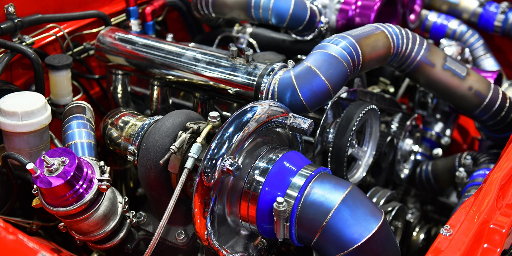
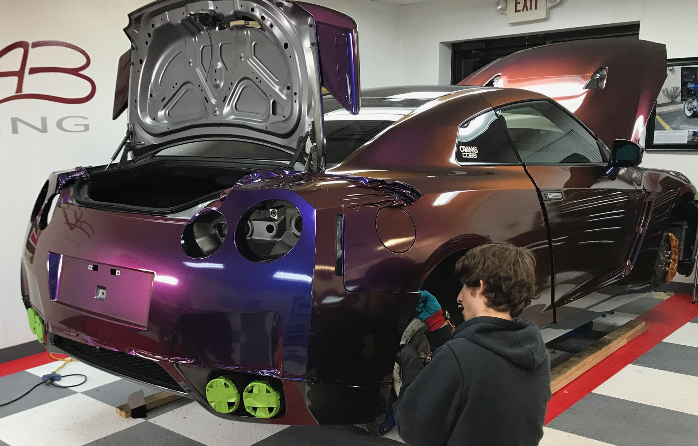

Performance modification:
Modifications made to upgrade the performance of the car are termed as performance modification. Performance modifications are generally made to boost the power, handling, and/or fuel efficiency of the car. Modifications made to the engine, exhaust system, air filters, brakes, suspensions, tyres, etc. fall under this category.

Functional modification:
Functional modifications are those which change or add certain functions to the vehicle. Installation of sunroofs, air conditioning, car phone, roof rack, navigation system, etc. come under this category. Functionalities added to a vehicle which were not there earlier are called functional mods.
Aesthetic modification:
This kind of modification is generally done to make the vehicle look better and unique. All changes made to the external or internal appearance of the vehicle are termed as aesthetic modifications. However, aesthetic modification or cosmetic modification is not always meant to make visual differences. Sometimes, they also bring significant changes in the performance by tweaking the body work. For example, certain body kits provide more stability and better aerodynamics to a car than the stock body.